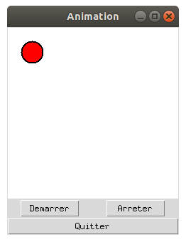

Animation
L'activité suivante va consister à animer une bille sur une surface graphique. On peut en première approche penser qu'il suffit simplement de changer les coordonnées d'un objet dans une bouche pour que l'objet se déplace, nous allons voir qu'il n'en est rien !
Regardons tout d'abord à quoi doit ressembler notre application :

Attelons nous d'abord à la conception de l'interface sans nous attarder sur le mouvement :
import tkinter as tk
# Variables globales
LARGEUR, HAUTEUR = 240, 240
x1, y1 = 20, 20 # coordonnees initiales
dx, dy = 15, 0 # 'pas' du deplacement
flag =0 # indicateur de mouvement modifié par start_it et stop_it
def move():
"""deplacement de la balle"""
pass # nous allons la définir plus tard
def stop_it():
"""arret de l'animation"""
global flag
flag =0
def start_it():
"""demarrage de l'animation"""
global flag
if flag == 0:
# pour ne lancer qu'une seule boucle
flag = 1
move()
#========== Programme principal =============
# Création de la fenêtre principale (main window)
mon_app = tk.Tk()
mon_app.title('Animation')
# Création d'un widget Canvas (zone graphique)
surface_dessin = tk.Canvas(mon_app, width=LARGEUR, height=HAUTEUR, bg='white')
surface_dessin.grid(row=0, column=0, columnspan=2)
# Creation de la balle. On memorise ici son nom, c'est important !!
bille = surface_dessin.create_oval(x1, y1, x1+30, y1+30, width=2, fill='red')
tk.Button(mon_app,text='Quitter', width=8, command=mon_app.destroy).grid(row=2, column=0, columnspan=2, sticky='ew')
tk.Button(mon_app, text='Demarrer', widt=8, command=start_it).grid(row=1, column=0)
tk.Button(mon_app, text='Arreter', width=8, command=stop_it).grid(row=1, column=1)
# demarrage du receptionnaire d'evenements (boucle principale) :
mon_app.mainloop()
Tester avec repl.it (version complète et fonctionnelle)
L'application prend forme mais rien ne bouge ! c'est normal, nous avons fait l'impasse sur
la fonction move() chargée du mouvement.
Approche naïve
Remplacez la fonction move() de votre programme par celle-ci :
def move():
"""deplacement de la balle"""
global x1, y1, dx, dy, flag
# On agit sur les coordonnées pour le mouvement de la balle
x1, y1 = x1 + dx, y1 + dy
if x1 > 190:
x1 = 190
dy = 15
if y1 > 190:
y1 = 190
dx = -15
if x1 < 20:
x1 = 20
dy = - 15
if y1 < 20:
y1 = 20
dx = 15
surface_dessin.coords(bille, x1, y1, x1+30, y1+30)
Le principe de cete fonction est simple : tant que la variable flag
est à 1, on ajoute aux coordonnées x_1, y_1 de la bille un petit incrément dx, dy.
On modifie les coordonnées de la bille pour refléter la nouvelle position. On teste au passage les
collisions avec les bords de la surface.
Pour gérer le changement de direction, l'astuce consiste à changer l'incrément.
Lancez le programme puis cliquez sur Demarrer pour lancer l'animation.
Catastrophe notre programme plante ! Que s'est-il passé ? Nous devons l'interrompre sauvagement.
Pas de panique, c'est tout à fait normal. Rappelons nous comment fonctionne un programme avec une interface
graphique : Le programme principal est constitué d'une boucle mainloop
qui attend un événement particulier pour passer la main à une partie du programme.
La fonction move() contient une boucle while pour bouger la balle, mais tant qu'on est prisonnier de cette boucle,
la mainloop ne reprend pas la main gérer entre autre la détection des appuis sur les
boutons.
Notre programme est figé car plus aucun événement n'est traité : il devient sourd aux événements extérieurs.
Règle à retenir : ne jamais bloquer la mainloop !!!!
Comment ne pas figer le programme ?
Il faut obligatoirement rendre la main à notre mainloop à intervalles réguliers afin
qu'elle puisse traiter les événements comme l'appui sur les boutons.
Pour ce faire, nous ferons appel à la méthode after() de notre fenêtre
principale :
Cette méthode permet de planifier le lancement d'une action au bout d'un certain temps.
En attendant, la main est rendue à la mainloop.
Voici donc la solution à notre problème : remplacer le while bloquant
par des appels réguliers à la fonction move()
grâce à la méthode after(). Voici comment on procède :
def move():
"deplacement de la balle"
global x1, y1, dx, dy, flag
# On agit sur les coordonnées pour le mouvement de la balle
x1, y1 = x1 +dx, y1 + dy
if x1 >210:
x1, dx, dy = 210, 0, 15
if y1 >210:
y1, dx, dy = 210, -15, 0
if x1 <10:
x1, dx, dy = 10, 0, -15
if y1 <10:
y1, dx, dy = 10, 15, 0
surface_dessin.coords(bille, x1, y1, x1 + 30, y1 + 30)
# On gère le mouvement en rappelant la fonction move après 50 ms
if flag >0:
surface_dessin.after(50,move)
Remplacez la fonction move() défectueuse par cette nouvelle fonction et
retestez votre programme. C'est sans danger, cette fois-ci ça marche !
La fonction move() ne monopolise plus le programme mais effectue un
petit déplacement, puis oblige le programme à la rappeler au bout de 50 milliseconde si l'ordre d'arrêter
n'a pas été passé.
Cela revient au final à une boucle tant que sauf que la mainloop reprend la main
régulièrement et donc notre programme répond aux demandes de l'utilisateur.
A vous de jouer !
En guise d'entrainement, vous allez écrire un programme en vous basant sur l'exercice précédent qui affichait des carrés verts à l'emplacement du clic de souris. Sauf que cette fois-ci, vous allez les faire tomber par terre avec une jolie animation !
Solution proposée
import tkinter as tk
# Variables globales
LARGEUR, HAUTEUR = 480, 320
x, y = 0, 0
carre = 0
g = 1 # accélération
def move():
"""deplacement de la balle"""
global x, y, g
y += g
g *= 1.15
r = 20
surface_dessin.coords(carre, x-r, y-r, x+r, y+r)
if y < HAUTEUR - 2 * r:
# => boucler apres 50 millisecondes si on n'est pas en bas
surface_dessin.after(50, move)
else:
surface_dessin.coords(carre, x-r, HAUTEUR-2*r, x+r, HAUTEUR)
def clic(event):
""" Gestion de l'événement Clic gauche sur la zone graphique """
global x, y, carre, g
g=1
# position du pointeur de la souris
x = event.x
y = event.y
# on dessine un carré
r = 20
# On cree le carre que l'on va animer
carre = surface_dessin.create_rectangle(x-r, y-r, x+r, y+r, outline='black', fill='green')
move()
def effacer():
""" Efface la zone graphique """
surface_dessin.delete(tk.ALL)
#========== Programme principal =============
# Création de la fenêtre principale (main window)
mon_app = tk.Tk()
mon_app.title('Carrés')
# Création d'un widget Canvas (zone graphique)
surface_dessin = tk.Canvas(mon_app, width=LARGEUR, height=HAUTEUR, bg='white')
surface_dessin.grid(row=0, column=0, columnspan=2)
# Evenement clic sur la surface
surface_dessin.bind('', clic)
# Boutons
tk.Button(mon_app,text='Quitter', width = 8, command=mon_app.destroy).grid(row=1, column=1, sticky='ew')
tk.Button(mon_app, text='Effacer', command=effacer).grid(row=1, column=0, sticky='ew')
# demarrage du receptionnaire d'evenements (boucle principale) :
mon_app.mainloop()